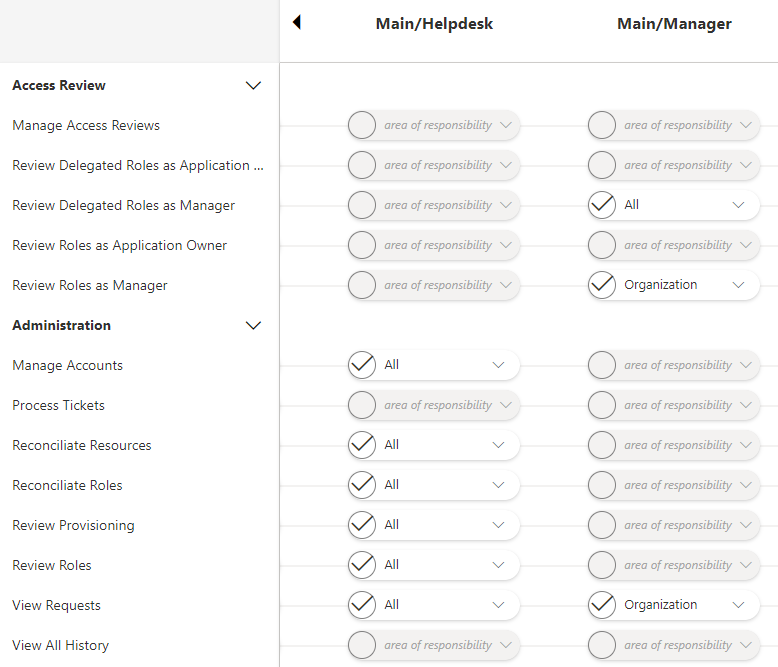

Configure a User Profile
How to tweak the References: Permissions for actions within Identity Manager, for a set of basic Assigned Profile .
Overview
All the permissions for accessing items and performing actions in Identity Manager are managed by assigning profiles to users and permissions to profiles.
For example, access to user lists with personal data is usually restricted to HR staff, and the modification of personal data would be restricted to HR managers.
We define here a permission as an entitlement within Identity Manager.
Permissions can be about:
- administration, which gives access to Administrate actions, accessible in the Administration section on the home page;
- directory, which gives access to users' data (with several available levels of access), and also any other data accessible in the Directory section on the home page;
- workflows, which gives access to actions for users' lifecycle (onboarding-movement-offboarding), through the workflows provided by Identity Manager within the Directory pages;
- reports, which gives access to Identity Manager's predefined reports about workforce. See the Generate Reports topic for additional information.
- notifications, which enables notification reception when specific workflows are launched.
Netwrix Identity Manager (formerly Usercube) recommends creating and using the following profiles:
Administratorfor requesting entitlements, performing potential additional role reviews, and updating user data, the role model and the settings;Helpdeskfor requesting entitlements and updating user data only, not for updating the role model or other settings;HRfor managing internal users, i.e. creating, updating and deleting them;Managerfor requesting their teams' entitlements and managing their external users, like contractors;RoleOfficerfor reviewing and approving roles;Userfor basic viewing of user and organizational information.
A user can have up to 10 assigned profiles.
The goal here is to create profiles and link specific permissions to the profiles, in order to build a set of typical profiles that will later be assigned to users. See the Assign Users a Profile topic for additional information. Instead of assigning permissions one by one to users, you will assign them sets of permissions (i.e. profiles).
Responsibility scopes
Each permission can be assigned a responsibility scope, which represents the scope of action of users with said permission.
For example, managers can be assigned the
View RequestsandManage Accountspermissions, but only for the teams in which they have the manager title. In this case they will handle the entitlement requests within the team they manage, having their scope of responsibility defined as their team. It means that the manager cannot see or do anything outside the identities included in their team.
Participants and Artifacts
Integrators must have the knowledge of the organization strategy towards the IGA project.
| Input | Output |
|---|---|
|
Create the Workforce Repository
(required) |
User profiles |
Configure a User Profile
Configure a user profile by proceeding as follows:
-
On the home page, click on Settings in the Configuration section, then on General > Profiles in the left menu.

-
Check whether the profile to configure is part of the provided list. If not, create it by clicking on the addition button at the top right and fill in the fields.


Identifier: must be unique among profiles and without any whitespace.Name: will be displayed in the UI to identify the profile.
Click on Create.
-
Access the page for profile configuration by clicking on Workforce > Profiles & Permissions in the left menu.
-
Follow Identity Manager's instructions for assigning permissions to the profile by clicking on the appropriate permissions, one by one, selecting if needed their responsibility scope.

-
Click on Save at the top of the page.
Verify Profile Configuration
Before you can see the profile in action, it needs to be assigned to a user.
See the Assign Users a Profile topic for additional information.
Next Steps
Once user profiles are configured, integrators can start configuring onboarding workflows. See the Create the Workforce Repository topic for additional information.